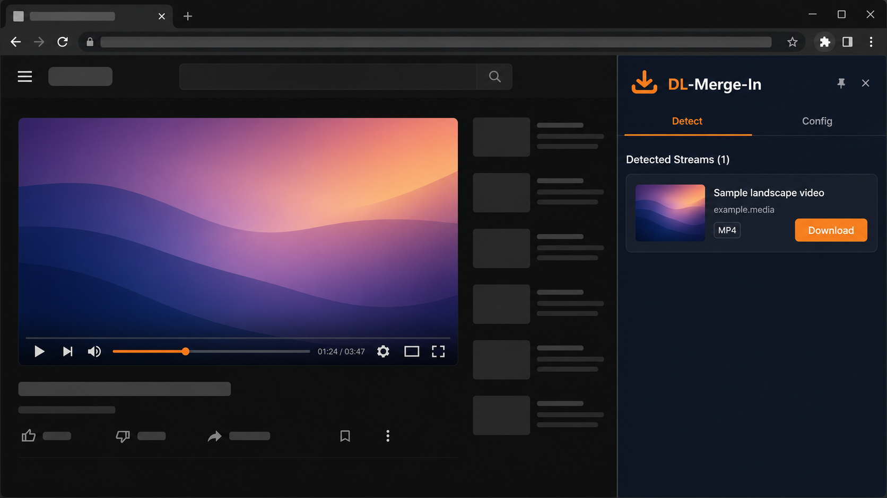
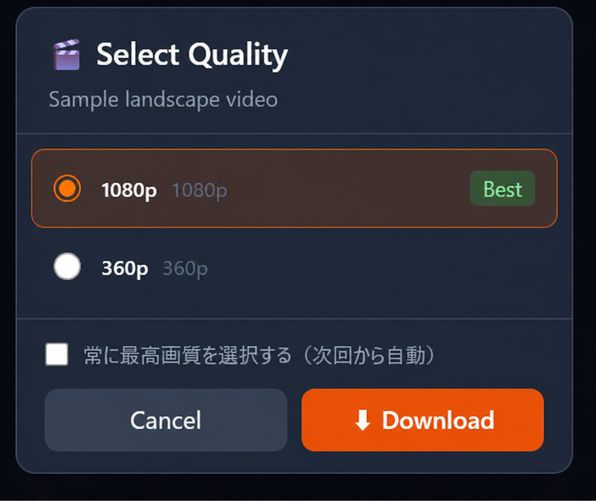
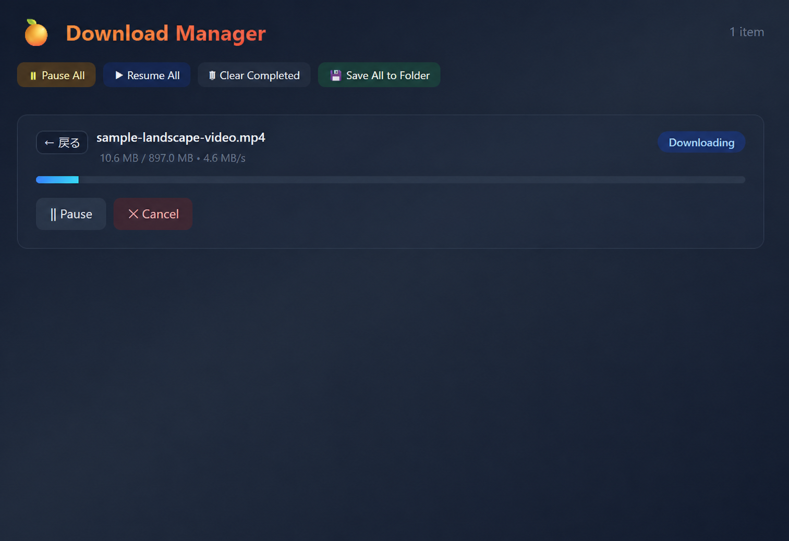

01
ページを開くだけで、
保存できるものを見つける。
動画や音声があるページを開くと、保存できそうなものを一覧で表示します。対応しているサイト以外でも、自動で探します。
WINDOWS DESKTOP TOOL
DL-Merge-In は、閲覧ページの動画・音声を自動で検出。画質・形式を選び、 あなたのPCに保存できる Windows 向けデスクトップツールです。
Windows / Chrome 標準対応 · インストール時の選択で Edge にも対応
Weekend in Hokkaido
12:48このページで見つかったメディア 2
日々の「あとで見たい」を、もっと自由に。
WHY DL-MERGE-IN
01
動画や音声があるページを開くと、保存できそうなものを一覧で表示します。対応しているサイト以外でも、自動で探します。
02
保存する前に、画質とファイルの種類を選べます。動画と音声が別々の場合も、ひとつのファイルにまとめられます。
03
複数の保存はキューで整理。ピン留め、速度制限、一時停止・再開まで、まとめて管理できます。
PRODUCT TOUR



掲載画面は中立なモックです。実在サービスのロゴ、アカウント情報、動画名は掲載していません。
保存したいメディアがあるページを、いつも通り表示します。
Detectタブに表示された候補から、画質・コーデック・形式を選択。
Download Managerで進行を確認しながら、完了したファイルをすぐに使えます。
FOR YOUR MOMENTS
通信環境を気にせず、あとでゆっくり楽しみたいコンテンツに。
必要な情報を、見たいときにすぐ参照できるように。
動画と音声を選んで保存。対応状況は、対応サービスの例をご確認ください。
READY WHEN YOU ARE
現行デスクトップ版は、無料・無制限・フル機能でお使いいただけます。
セットアップガイドを見る →Version 0.0.3 · Windows / Chrome 標準対応・Edge 選択対応公開配布URLは準備中です。現在はセットアップガイドから導入手順をご確認ください。
FAQ
現行のデスクトップ版は無料でご利用いただけます。
Windows の Google Chrome を標準対応しています。インストール時に選択することで Microsoft Edge にも対応できます。
主要な動画・音声配信サービスを含む保存候補を、個別対応と汎用検出で探します。対応サービスの例と注意事項をご確認ください。
DRM保護コンテンツは対象外です。サイトや配信方式によっては検出・保存できない場合があります。ご利用の際は各サービスの規約および著作権法を守ってください。
字幕の対応状況を含む現在の機能範囲は、対応サービスの例と注意事項をご確認ください。